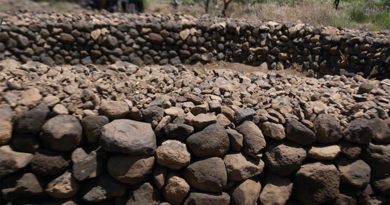

Pia, jamii za kale zilikuwa na maarifa na ujuzi katika kilimo cha umwagiliaji. Umwagiliaji ulifanyika kwa kutumia mito ya asili na maji yanayotiririka kutoka milimani. Mfano, maeneo ya Engaruka, Arusha kilimo cha umwagiliaji kilifanyika kwa kujenga mifereji kwa mawe kama matuta kutoka katika ukingo wa bonde la Ufa. Hii ilifanyika ili kuhifadhi na kupitisha maji kwa ajili ya umwagiliaji kama inavyoonekana katika Kielelezo namba 3.

Kielelezo namba 3: Mfereji uliojengwa kwa mawe kama matuta ili kukinga maji kwa ajili ya umwagiliaji
Aidha, katika maeneo mengine maji ya mvua yalitengenezewa mabwawa yaliyowekewa kingo ili kutunza maji kwa muda mrefu hata baada ya msimu wa mvua kupita. Maarifa na ujuzi huu wa asili ulikuwepo hata kabla ya kuja kwa teknolojia za kilimo kutoka nchi za kigeni.
Jamii zililima mazao ya asili ya mizizi kama vile viazi vitamu, viazi vikuu na magimbi (chunguza mfano katika Kielelezo namba 4). Pia, walilima mazao kama vile mtama, uwele na ulezi. Haya ni baadhi tu ya mazao ya asili.